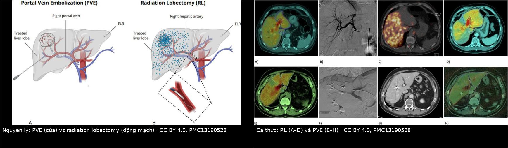
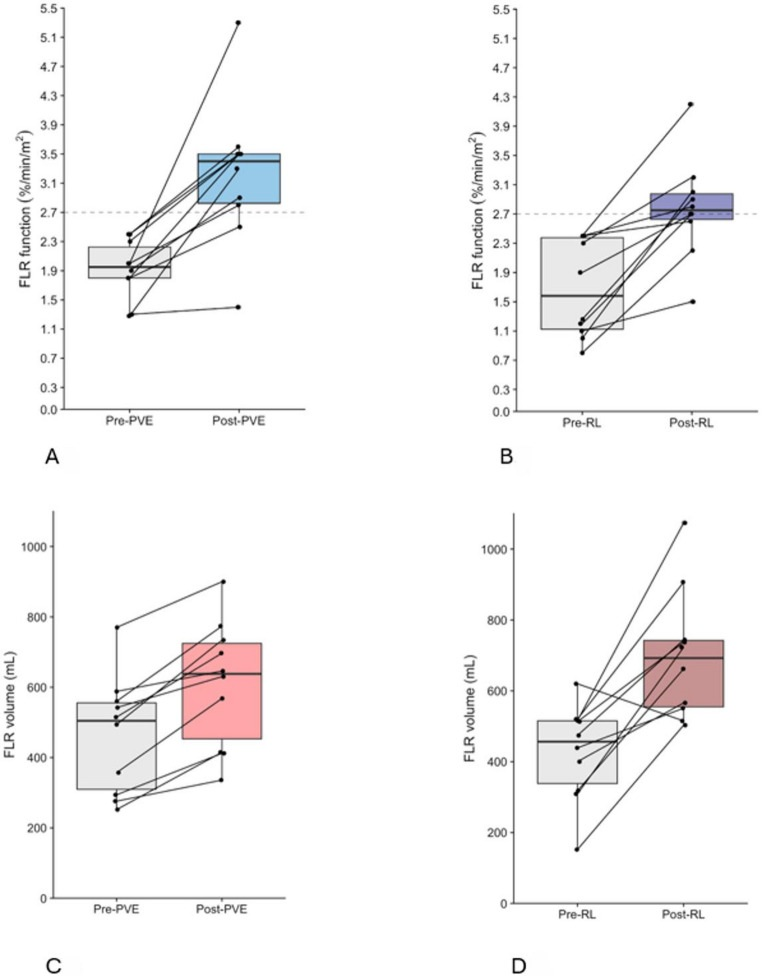
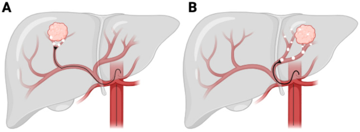
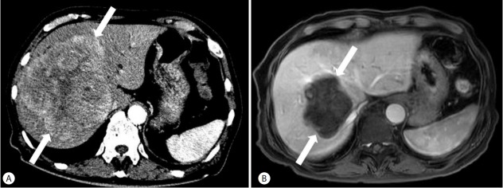

1856 — Radiation lobectomy bằng Y-90: tăng thể tích gan còn lại trước cắt gan lớn / Radiation lobectomy with Y-90 for future liver remnant hypertrophy
Tags: pattern:phi-dai-bu-tru pattern:teo-thuy-gan vung:gan vung:duong-mat-trong-gan anatomy:FLR protocol:CT-volumetry protocol:Y90-radioembolization protocol:HBS-mebrofenin score:FLR score:KGR incidentaloma:u-gan
Mức chắc chắn (certainty): tổng hợp y văn (literature synthesis) — tự biên từ so sánh trực tiếp PVE vs radiation lobectomy ở 20 bệnh nhân ung thư đại trực tràng di căn gan (PMC13190528, CC BY 4.0), tổng quan Y-90 trong HCC (PMC12071032, CC BY 4.0), nghiên cứu đo liều PET/CT sau Y-90 dự đoán phì đại thùy đối diện (PMC12568765, CC BY-NC 4.0), ca HCC 13 cm teo u còn 7 cm + phì đại thùy trái sau 2 lần TARE (PMC5497664, CC BY-NC 4.0) và nghiên cứu mô bệnh học về tổn thương bạch mạch quanh u sau radiation lobectomy (PMC10827593, CC BY 4.0). Không gắn một ca nguyên văn duy nhất của riêng bài.
Bài này là lựa chọn thứ tư trong nhóm "làm to gan trước khi cắt" của 1821 – Suy gan sau cắt gan (PHLF). 1821 đã chốt sFLR tối thiểu 20% (gan lành) / 30% (sau hóa trị) / 40% (xơ gan), KGR ≥ 2%/tuần, và so PVE – LVD – ALPPS. Nhưng cả ba đều chỉ làm to gan: khối u trong thùy bị chiếu xạ vẫn tiếp tục phát triển trong 3–6 tuần chờ. Radiation lobectomy (RL) khác ở chỗ vừa tiêu u vừa làm teo thùy mang u, trong một lần can thiệp.
Câu chốt: RL dùng chính hiệu ứng "teo – phì đại" (atrophy–hypertrophy complex) mà bất kỳ thùy gan nào bị cắt máu/chiếu xạ đều tạo ra. Đưa vi cầu Y-90 qua động mạch gan vào thùy mang u → u nhận 80–100% máu từ động mạch nên bị chiếu liều diệt, nhu mô lành quanh u teo dần, thùy đối diện phì đại bù trừ: 26–45% thể tích trong 44 ngày – 9 tháng (PMC13190528); ~85% bệnh nhân có phì đại đáng kể, trung vị +40%, và ~70% người trước đó không đủ điều kiện mổ đã được mổ (PMC12071032). Cái giá: RL chậm hơn PVE — đủ chức năng sau 75 ngày (64–85) so với 31 ngày (28–54) của PVE — nên phải chọn bệnh nhân chịu được thời gian chờ và cần kiểm soát u đồng thời.
1. Tổng quan bệnh học – cơ chế hình ảnh
- TẠI SAO vi cầu vào được u mà không vào nhu mô lành: gan có cấp máu kép — 75% tĩnh mạch cửa, 25% động mạch gan; nhu mô lành sống nhờ cửa. U gan (HCC, di căn) tân mạch hóa từ động mạch, và với di căn > 3 mm thì 80–100% dòng nuôi là động mạch (PMC13714070). Bơm vi cầu 20–60 µm vào động mạch gan → kẹt ở tiểu động mạch quanh u → liều xạ β tại chỗ rất cao, nhu mô lành chỉ nhận phần xạ "đi nhờ".
- TẠI SAO thùy đối diện to ra: khi một thùy mất dòng cửa (PVE) hoặc bị chiếu xạ liều cao (RL), thùy đó teo; dòng máu và yếu tố tăng trưởng dồn sang thùy còn lại → phì đại bù trừ. Với PVE, cơ chế là chuyển dòng cửa tức thì: thể tích FLR tăng trung bình 37,9% trong 25,9 ngày, rồi chững lại (PMC13190528). Với RL, cơ chế qua đường động mạch và đến nay chưa được hiểu đầy đủ, nhưng phì đại tiếp tục nhiều tháng — đó là lý do kết quả phụ thuộc thời điểm đo.
- Vật lý quyết định thời gian: Y-90 là bức xạ β (bán rã 64,1 giờ, đường đi trong mô ~2,5 mm) — tức liều cục bộ, không "xuyên" sang thùy bên kia. Phì đại thùy lành là phản ứng sinh học với teo thùy bị chiếu, không phải do xạ trực tiếp. Vì vậy phải bảo vệ thùy lành khỏi liều: nếu FLR nhận liều cao, nó không phì đại mà còn bị tổn thương.
- Ngưỡng liều đã dùng trong thực hành (nhu mô không u): > 70 Gy với vi cầu nhựa (resin) và ≥ 88 Gy với vi cầu thủy tinh (glass); liều u > 150 Gy; liều phổi < 25 Gy (nam) / < 20 Gy (nữ); liều trung bình toàn gan trong một loạt là 82,8 Gy (PMC12568765). Đây là các ngưỡng của y văn, chưa phải đồng thuận tuyệt đối — mỗi trung tâm dùng mô hình phân vùng (partition model) hoặc đo liều theo voxel khác nhau.
- TẠI SAO RL "đọc" khó trên hình ảnh: sau RL, thùy được chiếu teo + hoại tử + xơ, bờ ngấm thuốc có thể giả dạng u tiến triển; ngược lại u lành hóa thành vùng giảm tưới máu có thể bị đọc là "hoại tử hoàn toàn" khi còn tế bào sống. Đây là lý do không được đánh giá đáp ứng chỉ bằng một lần CT ở 1 tháng.
- Tác dụng phụ "ẩn" đáng biết: RL làm tổn thương bạch mạch quanh u — trên 10 ca CRLM + 9 ca HCC, mạch bạch huyết sau chiếu ngoằn ngoèo, lòng giãn rộng, dẫn lưu về hạch quanh gan giảm so với chứng (PMC10827593). Hệ quả thực hành: đừng kỳ vọng "đường bạch huyết sạch" sau RL, và cảnh giác hơn khi bệnh nhân có tràn dịch/xơ hóa quanh gan sau điều trị.
2. Mẫu hình + chẩn đoán phân biệt theo vị trí (gamut)
- "FLR không đủ" là bài toán thể tích – chức năng, không phải bài toán u. Ngưỡng thể tích: 20% gan lành, 30% sau hóa trị tân bổ trợ, 40% khi xơ gan (1821); ngưỡng chức năng: FLR < 2,7%/min/m² trên xạ hình mebrofenin (HBS) là không đủ (PMC13190528). Hai ngưỡng không luôn đi cùng chiều.
- Gamut theo phân bố u: một thùy (unilobar) + u lớn → RL hấp dẫn nhất (chiếu cả thùy, kiểm soát u + tạo phì đại); hai thùy (bilobar) → cần hai thì hoặc PVE/ALPPS trước, RL ít khi đủ; u nhỏ khu trú → radiation segmentectomy (chiếu phân thùy, giữ nhu mô) chứ không phải lobectomy.
- Gamut theo mạch: huyết khối tĩnh mạch cửa (PVT) cùng bên → PVE không làm được (đã tắc sẵn), còn RL vẫn làm được và có thể vừa kiểm soát u vừa tạo phì đại, miễn tĩnh mạch cửa đối diện thông (PMC12071032). Đây là chỉ định đặc hiệu của RL so với PVE.
- Gamut "gan đã bị can thiệp trước": sau TACE nhiều lần, sau PVE thất bại, sau xạ trị ngoài — RL có thể dùng nhưng phải đánh giá lại mạch nuôi và liều cộng dồn.
- Mnemonic "RADIO-LOBE": Remnant < ngưỡng, Arterial-only supply của u, Dominant unilobar disease, Ipsilateral PVT (RL vẫn làm được), One-session control + hypertrophy, Lung shunt thấp, One lobe only, Baseline function đủ cho thời gian chờ, Evaluate by volumetry + HBS.
3. Bảng so sánh phân biệt (ma trận đối chiếu)
| Thực thể (entity) | Hình ảnh điển hình | Chốt vào (rule-in) | Chốt loại (rule-out) | Gợi ý xác nhận |
|---|---|---|---|---|
| Radiation lobectomy (Y-90) | Thùy được chiếu teo dần, u giảm ngấm + hoại tử, thùy đối diện to ra; HBS chức năng FLR tăng | U một thùy + FLR dưới ngưỡng + cần kiểm soát u đồng thời + chịu được chờ 2–3 tháng | Không đặt được catheter chọn lọc hoặc shunt phổi lớn hoặc Child–Pugh C → không an toàn | CTA + 99mTc-MAA; liều nhu mô lành > 70 Gy (resin) / ≥ 88 Gy (glass) |
| PVE (portal vein embolization) | Thùy bị nút cửa teo, FLR to nhanh trong 3 tuần rồi chững | FLR thấp + u KHÔNG cần kiểm soát gấp + cửa cùng bên còn thông | PVT cùng bên (không còn cửa để nút) hoặc u tiến triển nhanh trong thời gian chờ | CT thể tích trước/4 tuần; +37,9% trong 25,9 ngày |
| ALPPS (hai thì + tách nhu mô) | Thì 1 tách nhu mô + buộc cửa; thì 2 cắt sau 7–14 ngày | FLR quá thấp, không chờ được, u cần cắt sớm | Xơ gan/Child B–C, viêm nhiễm, suy gan → biến chứng nặng | Thể tích giữa hai thì; theo dõi suy gan |
| Radiation segmentectomy | Chỉ một phân thùy bị chiếu; nhu mô quanh giữ nguyên | U nhỏ khu trú, FLR đã đủ — mục tiêu là diệt u, không phải làm to gan | U lan cả thùy hoặc cần phì đại → phải lobectomy/PVE | Liều phân thùy; CT 1–3–6 tháng |
| U tiến triển trong thời gian chờ (không phải phì đại) | Tổn thương to lên, ngấm thuốc mới, nốt mới trong FLR; thể tích FLR không tăng | Nốt mới / ngấm thuốc tăng ở thì động mạch trong/tháng chờ | Teo + hoại tử trong thùy đã chiếu là đáp ứng, không phải tiến triển | So sánh nhiều mốc; AFP/PET nếu cần |

Trái: PVE làm teo thùy mang u bằng cách chặn dòng cửa; RL đưa vi cầu Y-90 qua động mạch gan vào thùy mang u, tạo teo + phì đại đối diện. Phải: hình ảnh thực của hai chiến lược (HBS, chụp mạch, phân bố liều). Nguồn: PMC13190528, CC BY 4.0; ghép letterbox, không crop.
Đọc "phì đại" cho đúng: 3 con số
- 26–45% / 44 ngày – 9 tháng: biên độ và thời gian phì đại sau RL (PMC13190528) — đừng đo quá sớm rồi kết luận thất bại.
- 75 ngày vs 31 ngày: thời gian trung vị đạt chức năng FLR đủ sau RL và sau PVE (PMC13190528). Chênh 44 ngày là chi phí thời gian của việc chọn RL.
- +58,6% vs +51,1%: mức tăng chức năng FLR (p = 0,94) — RL không thua PVE về đích cuối, chỉ chậm hơn.
4. Protocol + hệ phân độ / điểm chuẩn hóa
- Trước can thiệp: CTA động mạch gan (biến thể giải phẫu, nhánh nuôi u, nhánh nguy hiểm), 99mTc-MAA để tính shunt phổi và mô phỏng phân bố, HBS mebrofenin để đo chức năng FLR (ngưỡng đủ ≥ 2,7%/min/m²), CT thể tích để tính FLR/TELV. Loại trừ: Child–Pugh C, shunt phổi lớn, suy thận/gan nặng, bệnh ngoài gan lan rộng (PMC12071032).
- Chọn kỹ thuật: radiation segmentectomy nếu u khu trú và FLR đã đủ; radiation lobectomy nếu cần phì đại đối diện; PVE nếu không cần kiểm soát u gấp; ALPPS nếu không thể chờ.
- Liều: u > 150 Gy; nhu mô không u > 70 Gy (resin) / ≥ 88 Gy (glass); phổi < 25 Gy (nam) / < 20 Gy (nữ); dùng partition model hoặc đo liều theo voxel; ghi rõ liều FLR vào hồ sơ (PMC12568765).
- Theo dõi thể tích: CT 1 tháng, 3 tháng, 6 tháng; đo FLR/TELV cùng mặt phẳng; tính KGR (%/tuần) thay vì chỉ so sánh hai lần đo; đánh giá chức năng bằng HBS khi thể tích "đủ" nhưng lâm sàng chưa chắc.
- Ngưỡng xử trí: FLR < 20/30/40% (theo nhu mô) hoặc KGR < 2%/tuần → không cắt, cân nhắc can thiệp thêm (1821). Sau cắt: theo dõi PHLF bằng tiêu chuẩn 50-50 (bilirubin và PT) — tử vong do PHLF có thể tới 21% (PMC13190528).
- Biến chứng cần dò: RILD (vàng da + cổ trướng trong 4–8 tuần, không do u tiến triển; < 5% trong các loạt hiện đại), loét dạ dày–tá tràng do bắn nhầm, viêm phổi do xạ khi shunt phổi cao (PMC12071032).
flowchart TD
A[FLR không đủ: thể tích dưới ngưỡng hoặc HBS dưới 2,7%/min/m2] --> B{U một thùy?}
B -->|Không: hai thùy| C[Hai thì hoặc PVE/ALPPS trước; RL ít khi đủ]
B -->|Có| D{Cần kiểm soát u trong thời gian chờ?}
D -->|Có| E{Cửa cùng bên còn thông?}
E -->|Có hoặc PVT cùng bên| F[Radiation lobectomy Y-90]
E -->|Không, đã tắc cửa| F
D -->|Không| G[PVE: +37,9% thể tích trong ~26 ngày]
F --> H[Đo liều: u > 150 Gy; nhu mô lành > 70 Gy resin hoặc ≥ 88 Gy glass; phổi < 25 Gy nam / < 20 Gy nữ]
H --> I[CT thể tích 1-3-6 tháng + HBS]
I --> J{FLR đủ và KGR ≥ 2%/tuần?}
J -->|Có| K[Cắt gan]
J -->|Không| L{Thời gian đã 3 tháng?}
L -->|Chưa| I
L -->|Rồi| M[Cân nhắc ALPPS hoặc từ bỏ mổ]

Cột A/B: chức năng FLR trước và sau PVE/RL, đường chấm là ngưỡng 2,7%/min/m². Cột C/D: thể tích FLR. Nguồn: PMC13190528, CC BY 4.0.

Chọn segmentectomy khi u khu trú và FLR đã đủ; chọn lobectomy khi cần phì đại thùy đối diện. Nguồn: PMC12071032, CC BY 4.0.
5. Biến thể bình thường và cạm bẫy
- "Thể tích tăng" không đồng nghĩa "chức năng tăng". Trong loạt so sánh, chức năng có thể tăng nhanh hơn thể tích, và ở một số bệnh nhân chức năng giảm sớm ở thùy bị chiếu rồi hồi phục sau ~6 tháng — đo thể tích đơn thuần đánh giá quá cao sự hồi phục (PMC13190528). Luôn đo cả hai khi quyết định mổ.
- Đọc teo thùy đã chiếu là "u tiến triển". Sau RL, thùy mang u teo + xơ + hoại tử; bờ ngấm thuốc mới quanh vùng chiếu có thể là viêm/xơ, không phải u sống. Chốt bằng ngấm thuốc thì động mạch, kích thước theo RECIST, và so nhiều mốc — không kết luận từ một CT 1 tháng.
- RILD trông giống "u tiến triển" hoặc "suy gan do hóa trị". Vàng da + cổ trướng xuất hiện 4–8 tuần sau Y-90, không có tắc mật hay u mới, bilirubin/ALP tăng — yếu tố nguy cơ: liều trung bình nhu mô lành cao, chiếu toàn gan, xơ gan, albumin thấp. Phòng bằng chia liều theo phân vùng (PMC12071032).
- Bắn nhầm vi cầu vào động mạch dạ dày–tá tràng, động mạch vị trái, động mạch hoành → loét/viêm tụy; phải chụp mạch và đặt coil bảo vệ trước khi bơm, và kiểm tra bằng Angio-CT sau bơm. Cùng nhóm: shunt phổi cao → viêm phổi do xạ.
- PVE và RL không hoán đổi cho nhau về thời gian: PVE nhanh nhưng chững sau 3 tuần và u có thể tiến triển trong lúc chờ; RL chậm hơn (75 ngày) nhưng vừa kiểm soát u. Chọn sai = hoặc mất cửa sổ mổ vì u to, hoặc mổ quá sớm khi FLR chưa đủ.
- Sau RL, bạch mạch quanh u bị tổn thương (ngoằn ngoèo, giãn lòng, dẫn lưu giảm — PMC10827593): đừng ngạc nhiên khi có dịch quanh gan/xơ hóa nhiều hơn dự kiến; và đừng dùng RL như "bước chuẩn bị làm sạch bạch huyết" trước mổ.
6. Tự lượng giá — Blind Quiz
Ca 1 — Nam 78 tuổi, HCC 13 cm thùy phải, Child–Pugh A5, AFP 769 ng/mL. Ảnh A trước điều trị, ảnh B sau 2 lần TARE 1 tháng.

- Gợi ý: chú ý kích thước u và thể tích thùy trái giữa hai ảnh.
- Câu hỏi: (1) Hai dấu hiệu chính trên ảnh B? (2) Đây là đáp ứng hay tiến triển? (3) Vì sao thùy trái to lên?
Bấm để hiện đáp án (findings + chẩn đoán)
- Findings: (A) khối 13 cm ngấm mạnh thì động mạch ở S4/8, chiếm gần cả thùy phải; (B) sau 2 lần TARE, khối co còn ~7 cm, mất ngấm thuốc (hoại tử), và thùy trái phì đại rõ.
- Chẩn đoán: đáp ứng hoàn toàn về hình ảnh + phì đại bù trừ thùy đối diện sau radiation lobectomy.
- Cơ chế: u nhận máu động mạch → vi cầu Y-90 kẹt tại tiểu động mạch nuôi u → hoại tử; nhu mô thùy phải teo → thùy trái tăng thể tích.
- Nguồn: Clin Mol Hepatol 2017 (PMC5497664), CC BY-NC 4.0 — ảnh nguyên bản, không crop/ghép.
Ca 2 — Bảng/đồ thị đáp ứng FLR: đường chấm nằm ngang ở 2,7%/min/m².
- Gợi ý: mỗi chấm là một bệnh nhân; đường nối là cùng một người trước và sau.
- Câu hỏi: (1) Sau PVE, bao nhiêu ca vượt ngưỡng chức năng? (2) RL có kém hơn PVE không? (3) Vì sao một số ca không vượt ngưỡng dù thể tích tăng?
Bấm để hiện đáp án (findings + chẩn đoán)
- Findings: sau PVE 9/10 vượt 2,7%/min/m²; sau RL 8/10 vượt; mức tăng chức năng trung vị +51,1% (PVE) và +58,6% (RL), p = 0,94 → không khác biệt. Thể tích tăng ở cả hai, nhưng thời gian đạt đủ chức năng: 31 ngày (PVE) vs 75 ngày (RL).
- Chẩn đoán: RL tương đương về đích, chậm hơn về thời gian; một số ca thể tích tăng nhưng chức năng chưa đạt → phải đo HBS, không chỉ CT.
- Cơ chế: RL cần thời gian cho teo thùy bị chiếu; PVE chuyển dòng cửa tức thì nhưng chững sau ~3 tuần.
- Nguồn: Angiogenesis 2026 (PMC13190528), CC BY 4.0.
Ca 3 — Bệnh nhân HCC thùy phải, FLR 22% trên gan xơ, có huyết khối nhánh cửa phải. Bàn chọn PVE hay RL.
Bấm để hiện đáp án (findings + chẩn đoán)
- Vấn đề: FLR 22% < 40% (ngưỡng cho gan xơ) → không đủ; PVT cùng bên làm PVE không khả thi (không còn cửa để nút) và làm u có nguy cơ tiến triển nhanh trong thời gian chờ.
- Chọn: radiation lobectomy — vừa chiếu u và tạo phì đại thùy trái, miễn cửa trái thông và shunt phổi thấp. Đo lại CT + HBS ở 1 và 3 tháng; kỳ vọng đủ chức năng sau ~75 ngày, không phải 4 tuần.
- Bẫy: nếu chỉ nhìn thể tích tăng ở 4 tuần mà mổ → FLR chức năng chưa đủ → nguy cơ PHLF.
- Nguồn tổng hợp: PMC13190528, PMC12071032, PMC12568765 (CC BY / CC BY-NC 4.0).
Bài liên quan chéo
- 1821 – Suy gan sau cắt gan (PHLF): sFLR 20/30/40%, KGR, PVE–LVD–ALPPS
- 1825 – Hội chứng gan nhỏ sau ghép
- 1814 – Rò mật sau cắt gan
- 930 – TACE/RFA và ung thư gan
- 134 – U nhầy ruột thừa chưa vỡ — bối cảnh di căn phúc mạc/gan
- 901 – Tổng quan can thiệp: an toàn và đáp ứng
Không dùng để chẩn đoán độc lập khi chưa có người hướng dẫn.